3 уровня защиты от патогенов
Иммунная система млекопитающих представляет собой сложную многоуровневую структуру, эволюционно сформировавшуюся для обеспечения защиты от широкого спектра патогенов. В основе этой организации лежит принцип последовательного развертывания защитных механизмов: от барьерных структур, препятствующих проникновению возбудителей, до специализированных клеточных и гуморальных реакций, обеспечивающих элиминацию инфекционных агентов.
Принято выделять три основных уровня защиты. Физические и химические барьеры составляют первую линию обороны, предотвращая инвазию патогенов. Врождённый иммунитет — быстрая неспецифическая реакция. Приобретенный (адаптивный) иммунитет развивается медленнее, но обладает ключевыми свойствами — специфичностью, разнообразием и формированием долговременной иммунологической памяти, что обеспечивается клональной селекцией T- и B-лимфоцитов.
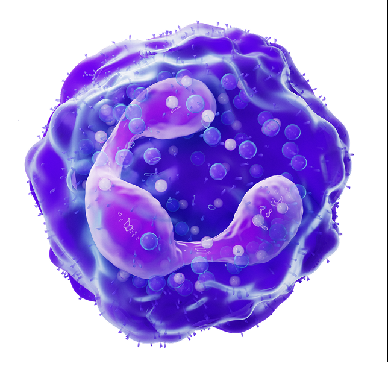
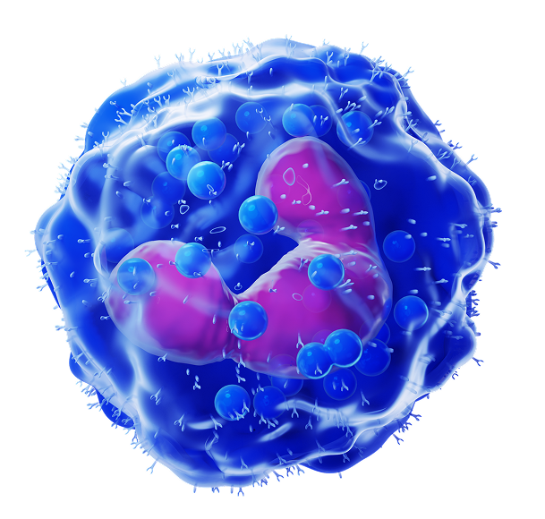
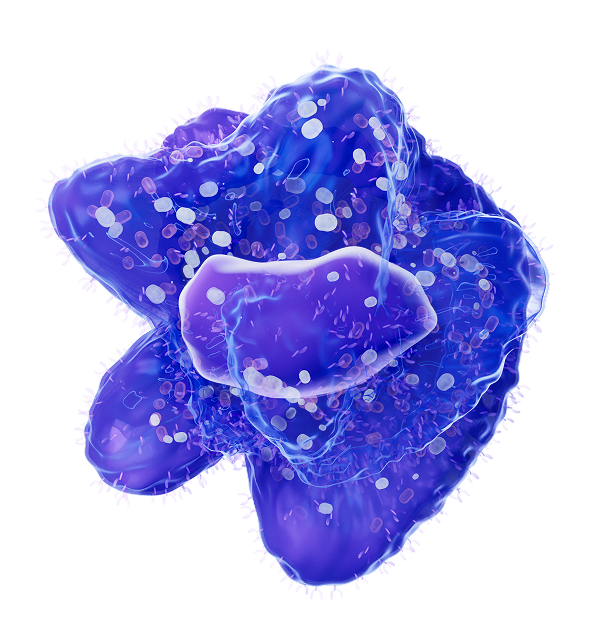
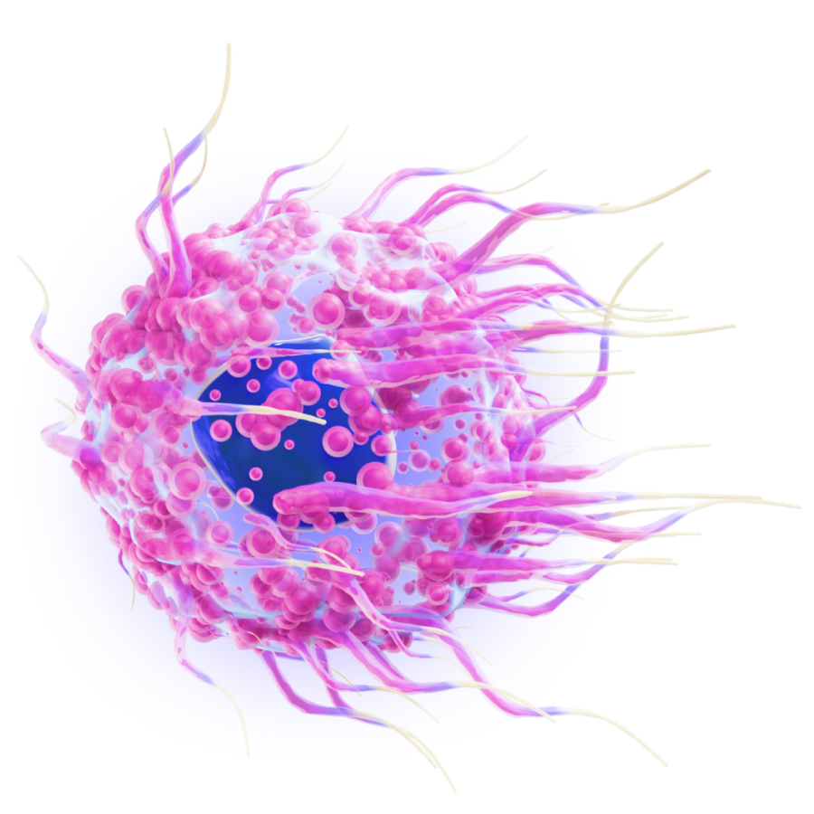
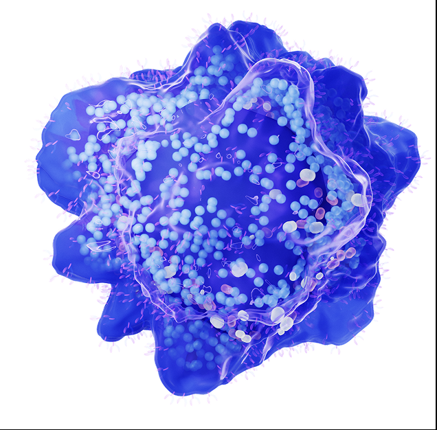
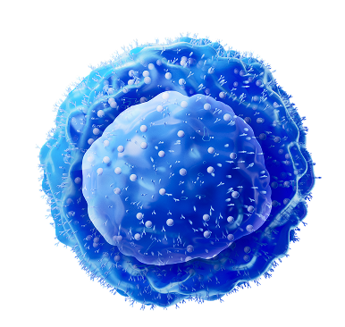
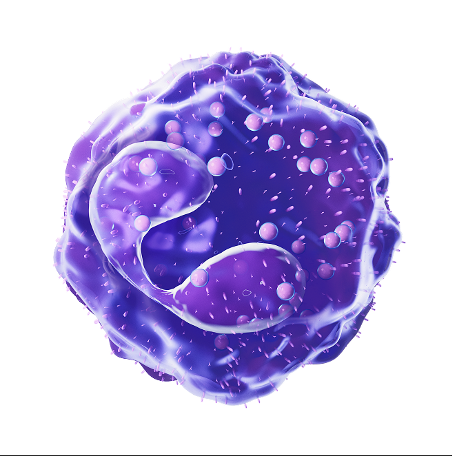
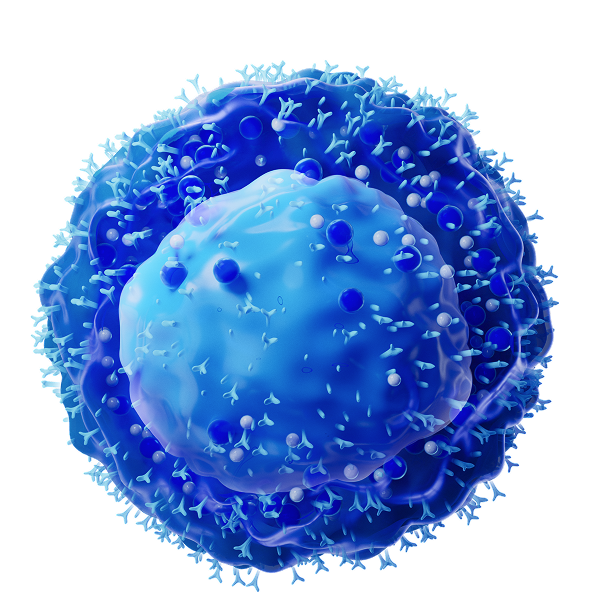
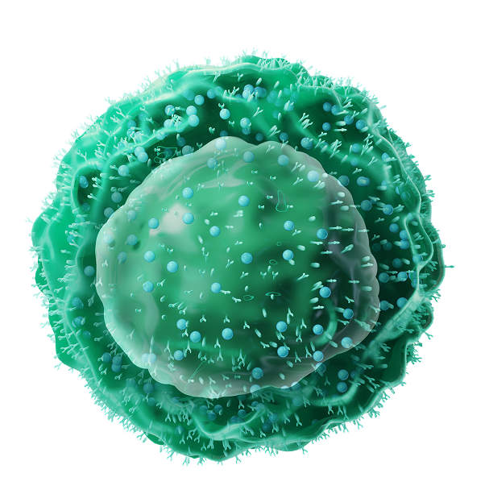
Т-хелпер
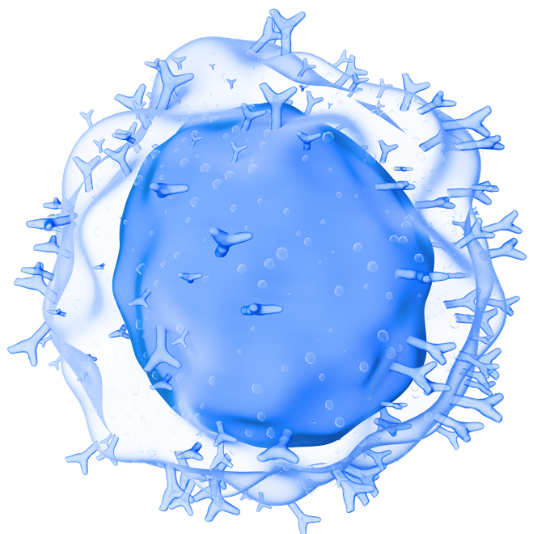
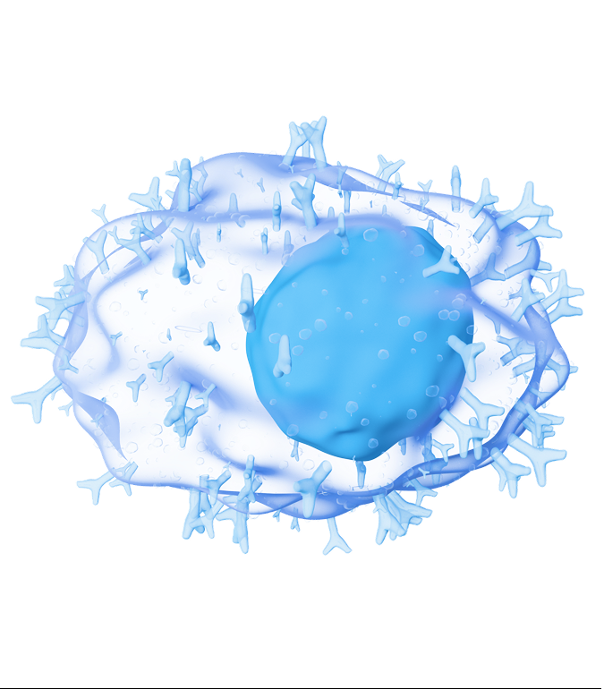
Важно
Эти уровни функционируют не изолированно, а как единая интегрированная система: клетки врождённого иммунитета активируют адаптивный ответ, а последующий адаптивный ответ модулирует и усиливает эффекторные механизмы врожденного звена
Гранулопоэз: путь от стволовой клетки до зрелого нейтрофила
Нейтрофилы
— наиболее многочисленная популяция лейкоцитов периферической крови, выполняющая ключевую роль в противобактериальной защите.
Их развитие, получившее название гранулопоэза, происходит в костном мозге и занимает примерно 10–14 дней. В процессе созревания клетка последовательно проходит несколько стадий, каждая из которых характеризуется специфическими морфологическими особенностями, изменением ядерной структуры и экспрессией поверхностных маркеров (CD-антигенов).
Нарушения на различных стадиях гранулопоэза лежат в основе врожденных и приобретенных нейтропений, а оценка соотношения молодых и зрелых форм (лейкоцитарная формула) используется для диагностики инфекционных и гематологических заболеваний.
Важно
Образование нейтрофилов стимулируется цитокинами
(колониестимулирующие факторы), которые секретируются
многими типами клеток в ответ
на инфекцию. Цитокины
воздействуют на гемопоэтические клетки, стимулируя
пролиферацию и созревание предшественников нейтрофилов.
PAMPs, DAMPs, PRR
Патоген-ассоциированные молекулярные паттерны (PAMPs, ПАМП)
– особые микробные молекулы, которые совсем непохожи на молекулы клеток хозяина и распознаются врожденным иммунитетом (свой-чужой).
Паттерн-распознающие рецепторы (PRR, ПРР)
– рецепторы клеток врожденного иммунитета, которые распознают микробные молекулы. Существует 100 типов PRR, которые могут распознать 1000 PAMPs и DAMPs.
|
Локализация в иммунных клетках Эффект после активации PRR |
Распознавание | |
|---|---|---|
| Toll-подобные рецепторы TLRs 10 типов | Поверхность клеток Эндосома |
Липополисахариды (эндотоксин) Липиды бактериальной стенки Пептидогликаны дцРНК оцРНК |
| Рецепторы лектина С-типа CLRs | Поверхность клеток | Микробные полисахариды |
|
NOD-подобные рецеторы NLRs |
Цитоплазма Экспрессия цитокинов Сенсор для инфламмасом (протеолиз интерлейкина 1β) |
Пептидогликаны бактериальной стенки Липиды поврежденной клетки |
| RIG-подобные рецепторы RLRs |
Цитоплазма Образование интерферона I |
Вирусная РНК |
|
Цитозольные ДНК-сенсоры CDSs |
Цитоплазма Образование интерферона I |
Микробная ДНК |
Важно
Также клетки врожденного иммунитета распознают молекулы, которые высвобождаются из поврежденных клеток организма (молекулярные паттерны, ассоциированные с повреждением (DAМPs), damage – повреждение).
Функции макрофагов
Макрофаги
– сигнальные, координирующие и эффекторные клетки врожденного иммунитета, участвующие в противовирусной и антибактериальной защите
Макрофаги обладают выраженной функциональной пластичностью — способностью изменять свой фенотип и характер активности в ответ на сигналы микроокружения. Эта особенность позволяет им выполнять разнообразные задачи в зависимости от стадии иммунного ответа и характера патогена. Процесс перехода между различными функциональными состояниями получил название поляризации макрофагов.
Классическая схема поляризации выделяет два основных направления. М1-макрофаги (классически активированные) формируются под действием интерферона-гамма и бактериальных липополисахаридов. Они характеризуются провоспалительной активностью, эффективным уничтожением внутриклеточных патогенов и презентацией антигенов для запуска адаптивного иммунитета. М2-макрофаги (альтернативно активированные) индуцируются интерлейкинами IL-4 и IL-13, участвуют в завершении воспалительной реакции, процессах репарации тканей, ангиогенезе и регуляции иммунного ответа.
В физиологических условиях макрофаги динамически переключаются между этими состояниями, обеспечивая последовательное развитие иммунного ответа: от инициации воспаления (М1-фенотип) до восстановления тканевой структуры (М2-фенотип). Нарушение баланса между этими направлениями поляризации лежит в основе ряда патологических состояний — хронического воспаления, фиброзных изменений тканей и опухолевой прогрессии.

- Провоспалительная активность
- Микробиологическая и опухолевая активность
- Повреждение тканей

- Противовоспалительная активность
- Способность к фагоцитозу
- Регенерация и восстановление тканей
- Ангиогенез
- Иммуномодуляция образования и прогрессирования опухоли
Дендритные клетки
ДК
– это главные антигенпрезентирующие клетки для наивных CD4 Т-лимфоцитов
Наивный CD4 Т-лимфоцит с подходящим ТКР распознает антиген и молекулу ГКГС, после чего происходит его активация, пролиферация и дифференцировка.
Для полной активации наивного CD4 Т-лимфоцита необходимо, чтобы ДК была полностью активированной (зрелой). Такие ДК выставляют на свою поверхность молекулы-костимуляторы
Важно
Дендритные клетки способны активировать наивные CD4⁺ T-лимфоциты при концентрации антигена в десятки раз меньшей, чем требуется макрофагам или B-клеткам. Это связано с высокой экспрессией молекул MHC II и костимуляторных рецепторов (CD80/CD86) у зрелых ДК
Типы иммунных ответов
Иммунная система способна распознавать огромное количество патогенов, но ее ответ не хаотичен. В зависимости от того, с каким врагом пришлось столкнуться (вирус, паразит или бактерия), запускается строго определенный сценарий — тип иммунного ответа.
Ключевую роль в выборе стратегии играют Т-хелперы (CD4+). Получив сигнал от антигенпрезентирующих клеток, они дифференцируются в специализированные субпопуляции. Каждая субпопуляция выделяет свой набор цитокинов, который «подзывает» нужные клетки-киллеры и направляет воспаление именно туда, где это необходимо. Сбалансированная работа этих механизмов — залог эффективной защиты без избыточного повреждения собственных тканей.
Важно
Дисбаланс этих типов ответов лежит в основе иммунопатологий: гипертрофия Th2 ведет к аллергии и астме, а избыточная активация Th17 ассоциирована с аутоиммунными заболеваниями.
Фагоцитоз
Фагоцитоз
— это процесс, при котором специализированные клетки (фагоциты) захватывают и переваривают твёрдые частицы. К объектам фагоцитоза относятся бактерии, вирусы, мёртвые клетки и другие микроорганизмы
Хемотаксис
Направленное движение фагоцитов к месту инфекции или воспаления.
Адгезия
Прикрепление фагоцита к объекту фагоцитоза. Опсонины облегчают этот процесс.
Поглощение
Обволакивание объекта фагоцитоза участком мембраны фагоцита.
Фагосома
Псевдоподии смыкаются вокруг объекта, формируется везикула — фагосома.
Слияние
Слияние фагосомы с лизосомами, содержащими гидролитические ферменты.
Переваривание
Уничтожение поглощённого объекта в фаголизосоме.
Экзоцитоз
Выброс продуктов деградации во внеклеточное пространство.

Лабораторные тесты для оценки воспаления
Воспалительный ответ сопровождается системными изменениями, которые могут быть выявлены с помощью рутинных лабораторных тестов. Эти показатели не являются специфическими для какого-либо отдельного заболевания, но их динамика отражает интенсивность воспалительного процесса, позволяет дифференцировать его природу (инфекционное vs. неинфекционное воспаление) и оценивать эффективность проводимой терапии.
Термины, используемые при интерпретации лейкоцитарной формулы
– снижение нейтрофилов менее 0,1*10^9/л
– выражен при бактериальных инфекциях
– снижены эритроциты, тромбоциты, лейкоциты
– увеличение молодых форм нейтрофилов, что связано с воздействием цитокинов (G-CSF, GM-CSF) на гранулоцитопоэз и усилением пролиферации и дифференцировки предшественников нейтрофилов
– все лейкоциты, содержащие гранулы в цитоплазме (Н, Б, Э).
Лимфоциты и моноциты не являются гранулоцитами
- все лейкоциты с сегментированными или дольчатыми ядрами (Н, Б, Э). Лимфоциты и моноциты имеют правильную форму ядра и к полиморфноядерным клеткам не относятся.
– увеличение общего количества лейкоцитов. Необходимо оценить, за счет нейтрофилов или лимфоцитов развился лейкоцитоз
– снижение количества лейкоцитов, нейтрофилов и лимфоцитов
(в абсолютном значении)
- процентное соотношение различных видов лейкоцитов, определяемое при подсчёте их в окрашенном мазке крови под микроскопом
– увеличение количества лимфоцитов
(в абсолютном значении)
– нейтрофилы, эозинофилы, базофилы, моноциты. Лимфоциты не являются фагоцитами
– увеличение соответствующих клеток
(в абсолютном значении)
C-реактивный белок
СРБ
– ключевой компонент врожденного гуморального иммунитета, врожденный опсонин, который распознает микробы и способствует их фагоцитозу и активирует комплемент
СРБ является типичным белком острой фазы воспаления
Синтезируется в печени под действием IL-6, который высвобождается из макрофагов в области повреждения или инфицирования тканей
Уровень СРБ при вирусных заболеваниях повышается незначительно, поэтому его существенный рост
в сочетании с повышенной температурой тела с большой долей вероятности свидетельствует о наличии бактериальной инфекции
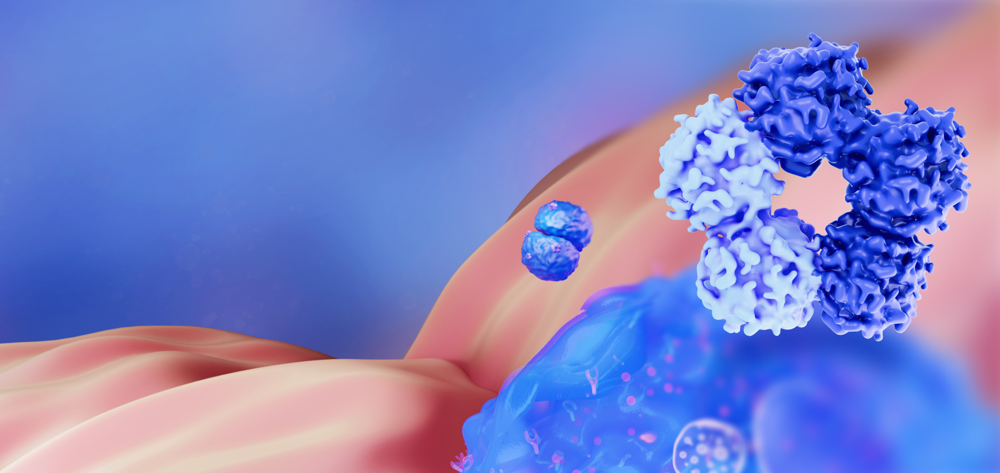
Скорость оседания эритроцитов (СОЭ)
Скорость оседания эритроцитов
– скорость, с которой эритроциты оседают под действием силы тяжести за 1 час.
Отражает скорость разделения крови на плазму и эритроциты.
Определяется степенью агрегации эритроцитов (их способностью слипаться друг с другом – образование «монетных столбиков»).
Что заставляет эритроциты агрегировать?
Белки плазмы фибриноген и иммуноглобулины действуют как молекулярные мостики между эритроцитами и значительно повышают их агрегацию. Любые заболевания, которые сопровождаются повышением уровня фибриногена и/или иммуноглобулинов будут приводить к ускорению СОЭ.
Важно
При анемии СОЭ увеличивается из-за снижения гематокрита.